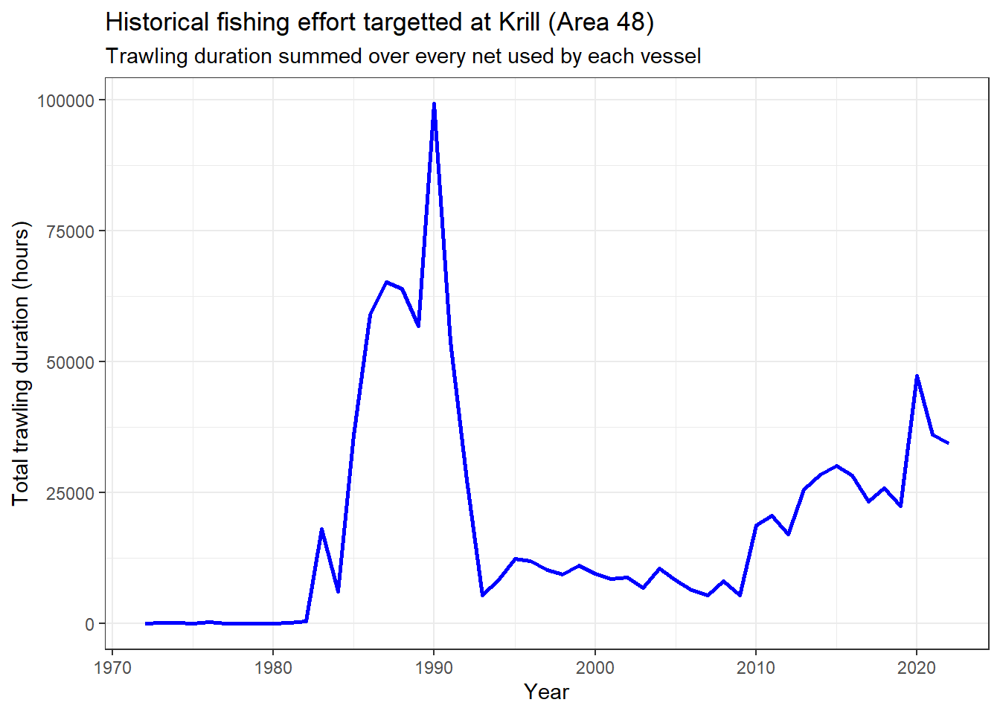

5 Krill MSE Application
A naive application of a Management Strategy Evaluation to the Krill Fishery
5.1 Introduction
5.2 Set-up MSE
5.2.1 Build the base-case Operating Model
Compute time-series of yearly total fishing effort targeted at Krill in terms of trawling duration in hours (summed over each net in each vessel) in the whole Statistical Area 48 (source: CCAMLR Secretariat 2023).
# filter effort for krill in all subareas of 48. Only considiring commercial
# effort (i.e. not for scientific purposes)
effort_krill_48 <- effort_ccamlr |>
filter(
target_species_code == "KRI",
#fishing_purpose_code == "C", # only commercial fishing
asd_code %in% as.character(c(48, 481:486))
)
yearly_trawl_hrs_krill_48 <- effort_krill_48 |>
group_by(year) |>
summarise(trawl_hrs = sum(trawl_duration_hours, na.rm = TRUE))
ggplot(yearly_trawl_hrs_krill_48) +
geom_line(aes(x = year, y = trawl_hrs), col = "blue", linewidth = 1) +
labs(
x = "Year",
y = "Total trawling duration (hours)",
title = "Historical fishing effort targetted at Krill (Area 48)",
subtitle = "Trawling duration summed over every net used by each vessel"
)
# Selecting scenario "scn-2", as it's composed by the PR scenario providing
# estimates of M closest to range in Pakhomov (1995), and maturity ogive based
# on estimates recommended in Maschette et al (2021)
krill_pars <- grym_setups |>
filter(scenario_id == "scn-2")
krill_base_OM <- build_krill_OM(
om_name = "krill_base_case",
maxage = last(unlist(krill_pars$Ages)),
nyears = nrow(yearly_trawl_hrs_krill_48),
LenCV = c(0.04, 0.06), # low variation in length-at-age
effort = yearly_trawl_hrs_krill_48$trawl_hrs,
qinc = c(0.0), # no increase in fishing efficiency
M_draws = krill_pars$prRecruitPars$`PR-emm21`$M,
RCV_draws = krill_pars$prRecruitPars$`PR-emm21`$CV,
n_iter = krill_pars$n_iter,
proj_yrs = krill_pars$n.years,
maxF = krill_pars$Fmax,
seed = 101
)# Modified versions of the MSEtool scripts solve bugs, in addition to adding the
# inclusion and better integration in another document as an embedded html
source("../MSEtool_fixes/OM_init_doc_dmp.R")
source("../MSEtool_fixes/OM_plots_dmp.R")
OMdoc(
OM = krill_base_OM,
openFile = FALSE,
#dir = "part2_openMSE_application",
rmd.source = "OM_krill_mse_base.rmd",
bib_file = "../references.json",
html_theme = "lumen",
inc_title = FALSE
)5.2.2 Specify Management Procedures
[FO->] The choice of MPs applicable to the krill stock is conditioned by their data requirements. The krill fishery can be classified as data-limited, with mostly time-series of catches and effort available on a consistent basis. There are frequent scientific surveys but only cover specific sub-areas of the management region [<-FO]
The following assumptions are required in terms of data availability in order to apply the MPs described in Table 5.1:
Time-series of catch at length can be estimated using length-frequency data collected from observer sampling.
Time-series of fishery-dependent CPUE are obtainable from annual catch and effort data. These CPUE estimates can be standardized to provide a suitable relative index of abundance.
Prescribed MSY-based reference points can be either calculated (e.g. the method by Martell and Froese, 2012) or specified via expert elicitation.
Code
MPs <- read_xlsx(
"krill applicable MPs.xlsx",
sheet = "picked_MPs_description"
)
MPs_names <- MPs$Name
MPs |>
flextable() |>
add_header_row(
values = c("General Category", "Name", "Description", "Data Requirements"),
colwidths = c(1, 1, 1,5)) |>
merge_v( j = 1:3, part = "header") |>
merge_v( j = 1, part = "body") |>
align(i = 1:2, align = "center", part = "header") |>
align(j = 4:8, align = "center", part = "body") |>
footnote(
#i = ~select(Name, starts_with("Fdem")), j = 8,
i = ~str_detect(Name, "Fdem"),
j = "Prescribed F_MSY/M",
value = as_paragraph(
"Requirement according to the documentation and in input validation in the source code. However
I could not see `FMSY_M` being used anywhere in `Fdem_` functions... so it might be a bug in the code"
),
ref_symbols = "ǂ") |>
bg(j = ~`Catch series`, i = ~str_detect(`Catch series`, "X"), bg = "#E1F5FE", part = "body") |>
bg(j = ~`Index series`, i = ~str_detect(`Index series`, "X"), bg = "#E1F5FE", part = "body") |>
bg(j = ~`Catch@length series`, i = ~str_detect(`Catch@length series`, "X"), bg = "#E1F5FE", part = "body") |>
bg(j = ~`Life history parameters`, i = ~str_detect(`Life history parameters`, "X"), bg = "#E1F5FE", part = "body") |>
bg(j = ~`Prescribed F_MSY/M`, i = ~str_detect(`Prescribed F_MSY/M`, "X"), bg = "#E1F5FE", part = "body")General Category | Name | Description | Data Requirements | ||||
|---|---|---|---|---|---|---|---|
Catch series | Index series | Catch@length series | Life history parameters | Prescribed F_MSY/M | |||
Status-quo | AvC | Constant TAC over projection period based on average historical catch. Represents the "status quo" management option. | X | ||||
Stabilisation | Islope1 | TAC ajusted incrementally to maintain stable CPUE or abundance index. Based on average recent catch (last 5 years) and the trajectory of index of abundance over the past 5 years. | X | X | |||
Islope4 | Similar to Islope1, but more precautionary. Uses a fraction (0.6) of average recent catch and forces slower changes in TAC in response to changes in cpue/index trajectory | X | X | ||||
LstepCC1 | TAC adjusted stepwise in relation to recent changes in mean length of recent catches. Takes the average historical catch (last 5 years) and applies a (upwards or downwards) step change depending on the ratio between mean length in recent catch (passt 5 years) and mean length in historical catches (last 10 years). | X | X | ||||
LstepCC4 | Similar toLstepCC1 but more precautionary. Uses a fraction (0.7) of average historical catch | X | X | ||||
Target-based | Itarget1 | TAC adjusted to achieve a target CPUE/index. Based on average historical catch (last 5 years) and adjustment term expressing deviations between historical, recent and target indices. Target index defined as 1.5 of average index over the last 10 years of historical period. Recent average index calculated from past 5 years. | X | X | |||
Itarget4 | Similar to Itarget1 but more precautionary. Uses a fraction (0.7) of average historical catch and target index is higher (2.5 of average historical index) | X | X | ||||
Ltarget1 | TAC incrementally adjusted to reach a target mean length in catches. Based on average historical catch (last 5 years) and adjustment term expressing deviations between historical, recent and target mean lengths. Target mean length defined as 1.05 of average length over the last 10 years of historical period. Recent average length in catch calculated from past 5 years | X | X | ||||
Ltarget4 | Similar to Ltarget1 but more precautionary. Uses a fraction (0.8) of average historical catch and target mean length is higher (1.15 of historical mean length) | X | X | ||||
L95target | Same as Ltarget1 but here the target mean length is based on the length at maturity rather than an arbitrary multiplicative | X | X | X | |||
L95target4 | As L95target but more precautionary. Uses a fraction (0.8) of average historical catch | X | X | X | |||
MSY-based | Fdem_ML | Annual TAC set for harvesting at MSY levels based on F_MSY. F_MSY calculated as r/2, where r Is the intrinsic rate of population growth. r is estimated from life history parameters. Current abundance estimated from mean length | X | X | X | Xǂ | |
Fdem_ML_25 | As Fdem_ML but with a precautionary buffer of 0.25 of the recommended TAC | X | X | X | Xǂ | ||
Fdem_ML_50 | As Fdem_ML but with a precautionary buffer of 0.50 of the recommended TAC | X | X | X | Xǂ | ||
Fdem_ML_75 | As Fdem_ML but with a precautionary buffer of 0.75 of the recommended TAC | X | X | X | Xǂ | ||
SPMSY | Sets TAC to achieve harvesting at MSY. MSY estimated from Martell and Froese surplus production model. Stock trajectories estimated based on trends in catch data and life-history information | X | X | ||||
SPMSY_25 | As SPMSY but with a precautionary buffer of 0.25 of the recommended TAC | X | X | ||||
SPMSY_50 | As SPMSY but with a precautionary buffer of 0.50 of the recommended TAC | X | X | ||||
SPMSY_75 | As SPMSY but with a precautionary buffer of 0.75 of the recommended TAC | X | X | ||||
DD | Sets TAC to achieve exploitation at UMSY, i.e. the harvest rate (the fraction of population being harvested every year) that will produce MSY. UMSY estimated from a simple delay-difference model (described in chap 9 of Hilborn and Walters, 1992) using time-series of catch and index of abundance | X | X | X | |||
DD_25 | As DD but with a precautionary buffer of 0.25 of the recommended TAC | X | X | X | |||
DD_50 | As DD but with a precautionary buffer of 0.50 of the recommended TAC | X | X | X | |||
DD_75 | As DD but with a precautionary buffer of 0.75 of the recommended TAC | X | X | X | |||
DD4010 | Similar to DD but superimposing a 40-10 HCR to constrain TAC recommendation as a function of depletion (B/B0). 40-10 rule specifies that the stock is not fished if depletion < 10% (i.e. TAC = 0), while TAC is set at UMSY levels (as DD) if depletion > 40%. If depletion is between 10 and 40%, TAC follows a linear increase from 0 to 100% UMSY levels. | X | X | X | |||
DD4010_25 | As DD4010 but with a precautionary buffer of 0.25 of the recommended TAC | X | X | X | |||
DD4010_50 | As DD4010 but with a precautionary buffer of 0.50 of the recommended TAC | X | X | X | |||
DD4010_75 | As DD4010 but with a precautionary buffer of 0.75 of the recommended TAC | X | X | X | |||
Yield-per-recruit | BK_ML | Annual TAC based on F_Max. F_max derived using length at first capture relative to L_inf and vB growth parameter K. Current vulnerable abundance estimated from recent catches and F, with F estimated from mean length | X | X | X | ||
BK_ML_25 | As BK_ML but with a precautionary buffer of 0.25 of the recommended TAC | X | X | X | |||
BK_ML_50 | As BK_ML but with a precautionary buffer of 0.50 of the recommended TAC | X | X | X | |||
BK_ML_75 | As BK_ML but with a precautionary buffer of 0.75 of the recommended TAC | X | X | X | |||
YPR_ML | TAC set to achieve harvest at F_0.1. Yield-per-recruit curve calculated from an age-structured model at equilibrium with life-history and selectivity parameters sampled from OM. Current abundance inferred from an estimate of Z calculated from mean length in catches and life-history parameters | X | X | X | |||
ǂRequirement according to the documentation and in input validation in the source code. However | |||||||
5.2.3 Set Performance Metrics
Code
source("krill_mse_metrics.R")
esc_metric <- ESC(krill_mse)
pd_metric <- PD(krill_mse)
ssb_fvu_metric <- SSB_FvU(krill_mse)
yrc_metric <- YRC(krill_mse)
lty_metric <- LTY(krill_mse, Ref = 0.25)
aavy_metric <- AAVY(krill_mse)
PMs <- tribble(
~ Category, ~ Name, ~ Description, ~ Detail,
"Spawning Biomass", "ESC", esc_metric@Name, esc_metric@Caption,
"Spawning Biomass", "PD", pd_metric@Name, pd_metric@Caption,
"Spawning Biomass", "SSB_FvU", ssb_fvu_metric@Name, ssb_fvu_metric@Caption,
"Yield", "YRC", yrc_metric@Name, yrc_metric@Caption,
"Yield", "LTY", lty_metric@Name, lty_metric@Caption,
"Yield", "AAVY", aavy_metric@Name, aavy_metric@Caption
)
PMs |>
flextable() |>
merge_v(j = ~Category) |>
fix_border_issues() |>
footnote(
i = ~ str_detect(Name, "ESC|PD"),
j = "Name",
value = as_paragraph("CCAMLR's default metrics"), ref_symbols = "ǂ")Category | Name | Description | Detail |
|---|---|---|---|
Spawning Biomass | ESCǂ | Escapement: Final Spawning Biomass relative to SSB0 | median(SSB at Year 20)/median(SSB0) |
PDǂ | Depletion: Spawning Stock Biomass relative to SSB0 | Prob. min(SSB) < 0.2 SSB0 (Years 1 - 20) | |
SSB_FvU | Proportion of projection years not heavily overfished | Proportion of years with SSB > 0.25 Unfished SSB (Years 1-20) | |
Yield | YRC | Projected Average Yield relative Historical Average Yield | Relative Change in Average Yield (Years 11-20 Vs Years -9-0) |
LTY | Average Yield relative to Reference Yield (Years 11-20) | Prob. Yield > 0.25 Ref. Yield (Years 11-20) | |
AAVY | Average Annual Variability in Yield (Years 1-20) | Prob. AAVY < 20% (Years 1-20) | |
ǂCCAMLR's default metrics | |||
5.3 Run MSE Simulations
# run historical period
krill_hist <- Simulate(krill_base_OM)
# Run projection period with selected MPs
krill_mse <- Project(Hist = krill_hist, MPs = MPs_names)
write_rds(krill_mse, "outputs/krill_mse_base_outputs_preliminary.rds")5.4 Results (Preliminary)
bins <- c(0, 0.25, 0.5, 0.75, 1)
mse_summary |>
#arrange(desc(ESC), desc(PD)) |>
flextable() |>
#bg(j = 2, bg = scales::col_numeric(palette = "BuGn",domain = c(0, 1)))
bg(j = ~ ESC, bg = scales::col_bin(palette = "YlGn", bins = c(0, 0.25, 0.5, 0.75, 1), domain = c(0, 1))) |>
bg(j = ~ PD, bg = scales::col_bin(palette = "YlGn", bins = c(0, 0.05, 0.1, 0.25, 1), reverse = TRUE, domain = c(0, 1))) |>
bg(j = ~ YRC, bg = scales::col_numeric(palette = "YlGn", domain = c(-20, 120))) |>
bg(j = ~ SSB_FvU + LTY + AAVY, bg = scales::col_numeric(palette = "YlGn", domain = c(0, 1), alpha = TRUE))MP | ESC | PD | SSB_FvU | YRC | LTY | AAVY |
|---|---|---|---|---|---|---|
AvC | 0.83 | 0.063 | 0.98 | -0.160 | 0.1400 | 0.990 |
Islope1 | 0.82 | 0.088 | 0.97 | -0.150 | 0.1600 | 0.970 |
Islope4 | 0.86 | 0.051 | 0.98 | -0.350 | 0.0950 | 0.990 |
LstepCC1 | 0.82 | 0.098 | 0.97 | -0.071 | 0.1800 | 0.980 |
LstepCC4 | 0.86 | 0.052 | 0.98 | -0.320 | 0.1000 | 1.000 |
Itarget1 | 0.86 | 0.058 | 0.98 | -0.340 | 0.1000 | 0.730 |
Itarget4 | 0.91 | 0.011 | 1.00 | -0.610 | 0.0290 | 0.870 |
Ltarget1 | 0.82 | 0.083 | 0.97 | -0.160 | 0.1500 | 0.980 |
Ltarget4 | 0.88 | 0.039 | 0.99 | -0.420 | 0.0760 | 1.000 |
L95target | 0.85 | 0.054 | 0.99 | -0.250 | 0.1100 | 0.990 |
L95target4 | 0.88 | 0.032 | 0.99 | -0.390 | 0.0700 | 1.000 |
Fdem_ML | 0.82 | 0.380 | 0.92 | 1.000 | 0.1700 | 0.130 |
Fdem_ML_25 | 0.95 | 0.087 | 0.98 | -0.650 | 0.0450 | 0.150 |
Fdem_ML_50 | 0.92 | 0.200 | 0.97 | -0.270 | 0.0830 | 0.150 |
Fdem_ML_75 | 0.89 | 0.290 | 0.95 | 0.530 | 0.1200 | 0.120 |
SPMSY | 0.83 | 0.079 | 0.99 | -0.087 | 0.1700 | 0.037 |
SPMSY_25 | 0.96 | 0.000 | 1.00 | -0.890 | 0.0001 | 0.000 |
SPMSY_50 | 0.94 | 0.002 | 1.00 | -0.750 | 0.0160 | 0.000 |
SPMSY_75 | 0.89 | 0.022 | 1.00 | -0.450 | 0.0840 | 0.004 |
DD | 0.21 | 0.660 | 0.54 | 12.000 | 0.6800 | 0.110 |
DD_25 | 0.67 | 0.330 | 0.78 | 4.400 | 0.3200 | 0.620 |
DD_50 | 0.46 | 0.470 | 0.68 | 7.100 | 0.4700 | 0.400 |
DD_75 | 0.27 | 0.580 | 0.60 | 9.900 | 0.5900 | 0.230 |
DD4010 | 0.21 | 0.660 | 0.54 | 12.000 | 0.6700 | 0.055 |
DD4010_25 | 0.67 | 0.330 | 0.78 | 4.400 | 0.3200 | 0.600 |
DD4010_50 | 0.46 | 0.470 | 0.69 | 7.100 | 0.4600 | 0.370 |
DD4010_75 | 0.27 | 0.580 | 0.60 | 9.900 | 0.5800 | 0.160 |
BK_ML | 0.19 | 0.870 | 0.51 | 15.000 | 0.8500 | 0.220 |
BK_ML_25 | 0.81 | 0.410 | 0.91 | 1.100 | 0.1700 | 0.120 |
BK_ML_50 | 0.59 | 0.630 | 0.80 | 6.000 | 0.4100 | 0.150 |
BK_ML_75 | 0.28 | 0.800 | 0.65 | 13.000 | 0.6800 | 0.190 |
YPR_ML | 0.38 | 0.730 | 0.71 | 8.400 | 0.5900 | 0.290 |
5.4.1 Tradeplots
TradePlot(krill_mse_base, 'ESC', "PD", Lims = c(0.75,0.1), Show = "plots", legend = FALSE)Warning: ggrepel: 16 unlabeled data points (too many overlaps). Consider
increasing max.overlapsTradePlot(krill_mse_base, "PD", 'SSB_FvU', Lims = c(0.1, 0.9), Show = "plots", legend = FALSE)Warning: ggrepel: 16 unlabeled data points (too many overlaps). Consider
increasing max.overlapsTradePlot(
krill_mse_base,
"ESC", 'YRC',
"ESC", "AAVY",
"ESC", "LTY",
Lims = c(0.75, -2, 0.75, 0, 0.75, 0),
Show = "plots",
legend = FALSE,
lab.size = 3,
axis.text.size = 10,
axis.title.size = 10,
Satisficed = TRUE)Warning: ggrepel: 12 unlabeled data points (too many overlaps). Consider
increasing max.overlapsWarning: ggrepel: 7 unlabeled data points (too many overlaps). Consider
increasing max.overlapsWarning: ggrepel: 19 unlabeled data points (too many overlaps). Consider
increasing max.overlapsTradePlot(
krill_mse_base,
"PD", 'YRC',
"PD", "AAVY",
"PD", "LTY",
Lims = c(0.1, -2, 0.1, 0, 0.1, 0),
Show = "plots",
legend = FALSE,
lab.size = 3,
axis.text.size = 10,
axis.title.size = 10)Warning: Removed 1 rows containing missing values (`geom_rect()`).Warning: ggrepel: 10 unlabeled data points (too many overlaps). Consider
increasing max.overlapsWarning: ggrepel: 18 unlabeled data points (too many overlaps). Consider
increasing max.overlapsTradePlot(
krill_mse_base,
'SSB_FvU', "AAVY",
'SSB_FvU', "YRC",
'SSB_FvU', "LTY",
Lims = c(0, 0),
Show = "plots",
legend = FALSE,
axis.title.size = 8,
lab.size = 3,
axis.text.size = 8
) Recycling limits Warning: ggrepel: 15 unlabeled data points (too many overlaps). Consider
increasing max.overlapsWarning: ggrepel: 20 unlabeled data points (too many overlaps). Consider
increasing max.overlaps#wormplot(krill_mse_base)
# Pplot(krill_mse_base)
#
# Pplot2(krill_mse_base)
#
#Kplot(krill_mse_base)library(fmsb)
dt <- mse_summary |>
filter(ESC >= 0.75, PD <= 0.1) |>
select(-c(ESC, PD)) |>
column_to_rownames("MP")
mins <- c(0, -1, 0, 0)
maxs <- c(1, 1, 1, 1)
data <- rbind(mins, maxs , dt)
radarchart(data)